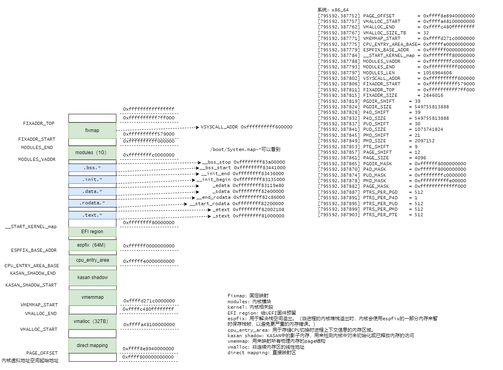
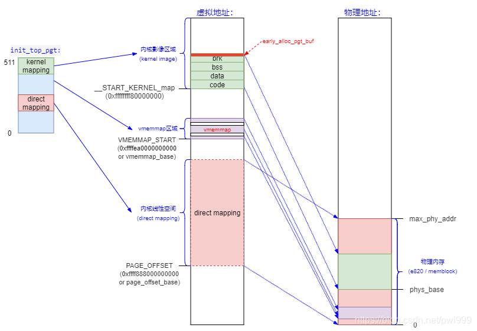
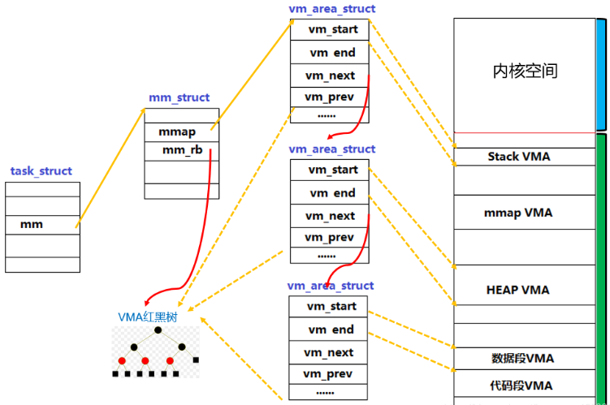
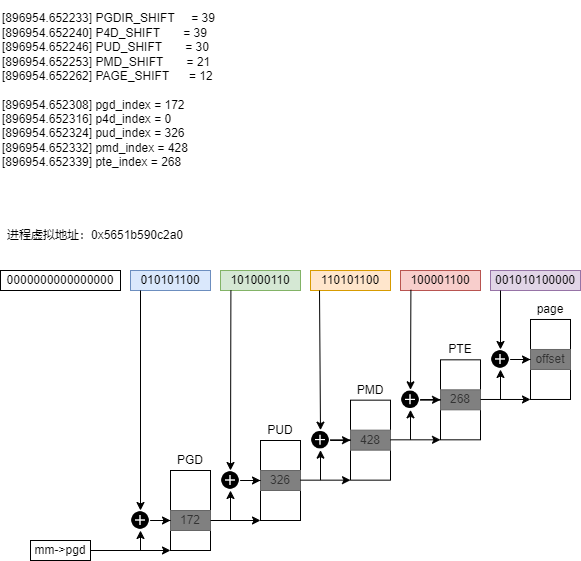

将虚拟地址转换为物理地址
先说下背景知识：
虚拟地址空间分为两部分：
- 进程虚拟地址空间（
0x0000000000000000 ~ 0x00007fffffffffff）（每个进程都有一份） - 内核虚拟地址空间（
0xffff800000000000 ~ 0xffffffffffffffff）（整个内核只有一份）
1. 内核虚拟内存映射（x86_64、4级页表）

解释几个较为重要的区域：
direct mapping：这段虚拟内存区域直接映射了整个物理内存。它比如kmalloc、__get_free_pages申请的虚拟地址都位该区域。- 通常，由于映射到物理地址中也是线性的，就可以根据偏移快速计算出物理地址。
static __always_inline unsigned long __phys_addr_nodebug(unsigned long x)
{
unsigned long y = x - __START_KERNEL_map;
/* use the carry flag to determine if x was < __START_KERNEL_map */
x = y + ((x > y) ? phys_base : (__START_KERNEL_map - PAGE_OFFSET));
return x;
}

vmalloc：用来把物理上不连续的内存映射成一段连续的虚拟地址，是内核态利用内存碎片的一个很有效的手段。vmemmap：起始地址是VMEMMAP_START。在稀疏内存模型（SPARSMEM）中，vmemmap用于为所有系统中跟踪内存的struct page分配一个连续的虚拟地址范围，以便更快地查找，这个大数组称为vmemmap。
更详细的官方文档：
========================================================================================================================
Start addr | Offset | End addr | Size | VM area description
========================================================================================================================
| | | |
0000000000000000 | 0 | 00007fffffffffff | 128 TB | user-space virtual memory, different per mm
__________________|____________|__________________|_________|___________________________________________________________
| | | |
0000800000000000 | +128 TB | ffff7fffffffffff | ~16M TB | ... huge, almost 64 bits wide hole of non-canonical
| | | | virtual memory addresses up to the -128 TB
| | | | starting offset of kernel mappings.
__________________|____________|__________________|_________|___________________________________________________________
|
| Kernel-space virtual memory, shared between all processes:
____________________________________________________________|___________________________________________________________
| | | |
ffff800000000000 | -128 TB | ffff87ffffffffff | 8 TB | ... guard hole, also reserved for hypervisor
ffff880000000000 | -120 TB | ffff887fffffffff | 0.5 TB | LDT remap for PTI
ffff888000000000 | -119.5 TB | ffffc87fffffffff | 64 TB | direct mapping of all physical memory (page_offset_base)
ffffc88000000000 | -55.5 TB | ffffc8ffffffffff | 0.5 TB | ... unused hole
ffffc90000000000 | -55 TB | ffffe8ffffffffff | 32 TB | vmalloc/ioremap space (vmalloc_base)
ffffe90000000000 | -23 TB | ffffe9ffffffffff | 1 TB | ... unused hole
ffffea0000000000 | -22 TB | ffffeaffffffffff | 1 TB | virtual memory map (vmemmap_base)
ffffeb0000000000 | -21 TB | ffffebffffffffff | 1 TB | ... unused hole
ffffec0000000000 | -20 TB | fffffbffffffffff | 16 TB | KASAN shadow memory
__________________|____________|__________________|_________|____________________________________________________________
|
| Identical layout to the 56-bit one from here on:
____________________________________________________________|____________________________________________________________
| | | |
fffffc0000000000 | -4 TB | fffffdffffffffff | 2 TB | ... unused hole
| | | | vaddr_end for KASLR
fffffe0000000000 | -2 TB | fffffe7fffffffff | 0.5 TB | cpu_entry_area mapping
fffffe8000000000 | -1.5 TB | fffffeffffffffff | 0.5 TB | ... unused hole
ffffff0000000000 | -1 TB | ffffff7fffffffff | 0.5 TB | %esp fixup stacks
ffffff8000000000 | -512 GB | ffffffeeffffffff | 444 GB | ... unused hole
ffffffef00000000 | -68 GB | fffffffeffffffff | 64 GB | EFI region mapping space
ffffffff00000000 | -4 GB | ffffffff7fffffff | 2 GB | ... unused hole
ffffffff80000000 | -2 GB | ffffffff9fffffff | 512 MB | kernel text mapping, mapped to physical address 0
ffffffff80000000 |-2048 MB | | |
ffffffffa0000000 |-1536 MB | fffffffffeffffff | 1520 MB | module mapping space
ffffffffff000000 | -16 MB | | |
FIXADDR_START | ~-11 MB | ffffffffff5fffff | ~0.5 MB | kernel-internal fixmap range, variable size and offset
ffffffffff600000 | -10 MB | ffffffffff600fff | 4 kB | legacy vsyscall ABI
ffffffffffe00000 | -2 MB | ffffffffffffffff | 2 MB | ... unused hole
__________________|____________|__________________|_________|___________________________________________________________
2. 测试代码（内核虚拟地址转物理地址）
static void kernel_test(void) {
void *kptr = NULL, *vptr = NULL;
struct page *pg = NULL;
kptr = kmalloc(PAGE_SIZE, GFP_KERNEL);
if (kptr == NULL) {
return;
}
printk(KERN_INFO "kmalloc allocated memory at 0x%lx\n", (unsigned long)kptr);
printk(KERN_INFO "Physical address: 0x%lx\n", (unsigned long)virt_to_phys(kptr)); // 实际上调用的__phys_addr_nodebug函数
printk(KERN_INFO "Physical address: 0x%lx\n", (unsigned long)kptr - PAGE_OFFSET);
kfree(kptr);
vptr = vmalloc(PAGE_SIZE);
if (vptr == NULL) {
return;
}
printk(KERN_INFO "vmalloc allocated memory at 0x%lx\n", (unsigned long)vptr);
pg = vmalloc_to_page(vptr); // 根据页表查询，pgd->p4d->pud->pmd->pte
if (pg == NULL) {
vfree(vptr);
return;
}
printk(KERN_INFO "Physical address: 0x%llx\n", page_to_phys(pg));
vfree(vptr);
}
[895289.148373] kmalloc allocated memory at 0xffff8e8b859e2000
[895289.148377] Physical address: 0x2459e2000
[895289.148381] Physical address: 0x2459e2000
[895289.148391] vmalloc allocated memory at 0xffffa481000e6000
[895289.148395] Physical address: 0x26b6e4000
看下代码中virt_to_phys的注释：（只能用于直接映射的地址，kmalloc也属于直接映射）
It is only valid to use this function on addresses directly mapped or allocated via kmalloc.
3. 进程虚拟内存映射

4. 测试代码（进程虚拟地址转物理地址）
static int pid;
static unsigned long va;
module_param(pid, int, 0644); // process pid
module_param(va, ulong, 0644); // process virtuall address
static void user_test(void) {
unsigned long pa = 0; // physics address
struct task_struct *pcb = NULL; // process task struct
struct pid *p = NULL;
pgd_t *pgd = NULL;
p4d_t *p4d = NULL;
pud_t *pud = NULL;
pmd_t *pmd = NULL;
pte_t *pte = NULL;
p = find_vpid(pid);
if (p == NULL)
return;
pcb = pid_task(p, PIDTYPE_PID);
if (pcb == NULL)
return;
if (!find_vma(pcb->mm, va)) {
printk("virtual address 0x%lx is not available\n", va);
return;
}
pgd = pgd_offset(mm, va);
printk("pgd = 0x%p\n", pgd);
printk("pgd_val = 0x%lx, pgd_index = %lu\n", pgd_val(*pgd), pgd_index(va));
if (pgd_none(*pgd)) {
printk("not mapped in pgd\n");
return;
}
p4d = p4d_offset(pgd, va);
printk("p4d = 0x%p\n", p4d);
printk("p4d_val = 0x%lx, p4d_index = %lu\n", p4d_val(*p4d), p4d_index(va));
if (p4d_none(*p4d)) {
printk("not mapped in p4d\n");
return;
}
pud = pud_offset(p4d, va);
printk("pud = 0x%p\n", pud);
printk("pud_val = 0x%lx, pud_index = %lu\n", pud_val(*pud), pud_index(va));
if (pud_none(*pud)) {
printk("not mapped in pud\n");
return;
}
pmd = pmd_offset(pud, va);
printk("pmd = 0x%p\n", pmd);
printk("pmd_val = 0x%lx, pmd_index = %lu\n", pmd_val(*pmd), pmd_index(va));
if (pmd_none(*pmd)) {
printk("not mapped in pmd\n");
return;
}
pte = pte_offset_kernel(pmd, va);
printk("pte = 0x%p\n", pte);
printk("pte_val = 0x%lx, pte_index = %lu\n", pte_val(*pte), pte_index(va));
if (pte_none(*pte)) {
printk("not mapped in pte\n");
return;
}
if (!pte_present(*pte)) {
printk("pte not in RAM\n");
return;
}
pa = (pte_val(*pte) & PAGE_MASK);
printk("virtual address 0x%lx --> physics address 0x%lx\n", va, pa);
}
$ insmod va2pa.ko pid=384052 va=94908938502816 && rmmod va2pa
$ dmesg
[896954.652303] pgd = 0x0000000024800ce5
[896954.652308] pgd_val = 0x8000000107cd4067, pgd_index = 172
[896954.652312] p4d = 0x0000000024800ce5
[896954.652316] p4d_val = 0x8000000107cd4067, p4d_index = 0
[896954.652320] pud = 0x0000000094c9c001
[896954.652324] pud_val = 0x101a71067, pud_index = 326
[896954.652328] pmd = 0x00000000fca675fa
[896954.652332] pmd_val = 0x106b88067, pmd_index = 428
[896954.652336] pte = 0x0000000097f147f5
[896954.652339] pte_val = 0x80000001422c5867, pte_index = 268
[896954.652344] virtual address 0x5651b590c2a0 --> physics address 0x80000001422c5000
